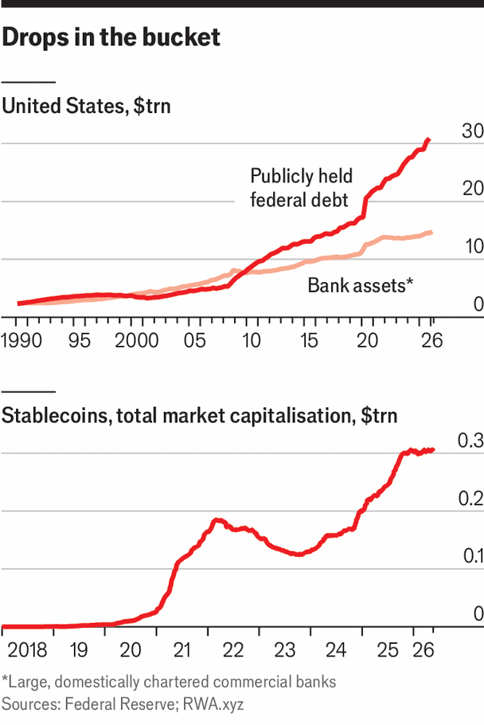

Neither banks nor stablecoins will rescue the Treasury market
More involvement from banks and crypto firms in the Treasury market is a good thing. Neither will outrun immense issuance
June 4th 2026
“YOUR PIPELINE”, according to a popular saying in the sales industry, “is your lifeline.” The debt managers responsible for issuing Treasuries might not like to associate themselves with cold-callers. But with some once-reliable buyers of Treasuries no longer behaving so reliably, the task of searching for alternative customers is an increasingly vital one.
There are two types that optimistic boosters in the Trump administration hope will get more active: crypto-bros in khaki shorts and bankers in pinstripes. Both would help increase demand for Treasuries and potentially make the market function better—though they would do neither in world-changing proportions.
Take the crypto-bros first, who bring stablecoins to the table. Stablecoins are crypto assets pegged to a certain value—usually one-to-one with the American dollar. The GENIUS Act, passed by Congress last year, laid out who can produce them and what they can be used for. Crucially, the law requires that stablecoins be backed by a fully matching amount of short-term Treasury debt, maturing in less than 94 days.

The asset class has taken off quickly, more than doubling in size to $325bn in the past two years (see chart). Tether, the biggest stablecoin, holds $117bn in Treasuries; if it were a country, it would be the 18th-largest national holder of American debt, ranked between South Korea and the United Arab Emirates. Some policymakers, not least Scott Bessent, the treasury secretary, believe that continued rapid growth could make the coins an important source of demand for Treasuries. In November Mr Bessent suggested that the stablecoin market could grow tenfold by the end of the decade, driving demand for Treasury bills.
Standard Chartered, a bank, is even more bullish, predicting the market will grow to $2trn in less than two years. That kind of growth would spur some $1trn in additional demand for Treasury bills (not $2trn, since some of the gusto for stablecoins would probably eat into other sources of demand, such as money-market funds). That, along with a potentially greater appetite from the Federal Reserve (see previous story), would allow the Treasury to issue a far larger portion of its debt as bills, reducing issuance of longer-dated bonds and so lowering average yields.
But there is ample reason for scepticism. JPMorgan Chase, another bank, believes stablecoin growth will be much slower. It sees a market of $500bn-750bn as more plausible by the end of 2027. Indeed, since the end of October stablecoins’ march has slowed almost to a standstill, with growth of less than 5%. That coincides with a slump in riskier crypto assets such as bitcoin. A similar pattern held between 2022 and 2024, when the stablecoin market actually shrank in size during another slump in crypto prices—reinforcing a perception of stablecoins as merely a vehicle for crypto investment. Indeed, without a recovery in crypto prices, even the pessimistic forecast for stablecoins (doubling by the end of next year) may prove too lofty.
Banks are an old source of demand for Treasuries that are making a comeback. They had been declining as players in the Treasury market since just after the global financial crisis, when Congress and regulators, keen to prevent more banks from going belly up, made it harder for them to grow their business—including trading or lending against American government debt. Now policymakers lament that such rules shifted systemic risk elsewhere: when banks retreated, worryingly indebted investors stepped forward.
Loosening restrictions on banks would allow them to return to their previous role as the market’s middlemen. In November, American regulators agreed to reduce a particular capital requirement for banks, known as the enhanced supplementary leverage ratio. That move enabled banks to hold (and buy and sell) more low-risk assets like Treasuries.
In anticipation of the change (which took effect in April) banks’ activity in the market has climbed. Dealer holdings of Treasuries—the bonds held by banks in their role as market-makers, rather than for their own portfolios—had already increased from around $200bn at the end of 2021 to $542bn at the end of 2025. The new demand is welcome, but even more important is the fact that banks may now be more willing to trade through a crisis, keeping the market liquid.
More deregulation is on the way. Banks have won significant changes to the American implementation of Basel III, a package of international-banking regulations, and to the rules for the very largest lenders, known as globally systemically important banks. Those rules will be steadily loosened over the years to come, allowing banks to hold more assets without incurring a capital penalty, and enabling them to trade more actively in the Treasury market.
But banks are still unlikely to fulfil the role they once did, because the scale of the task has outgrown them. At the end of 2008, large commercial banks in America boasted total assets of $8trn, compared with a federal debt of roughly $6trn. By the end of 2025, bank assets had grown by around 80%, to a little less than $15trn, whereas the federal debt had ballooned by 380%, to a little more than $30trn. With such a mountain of debt, there are no new buyers or intermediaries, not even banks, who can reasonably keep up. ■